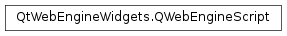

QWebEngineScript¶
Synopsis¶
Functions¶
- def
__eq__(other) - def
__ne__(other) - def
injectionPoint() - def
isNull() - def
name() - def
runsOnSubFrames() - def
setInjectionPoint(arg__1) - def
setName(arg__1) - def
setRunsOnSubFrames(on) - def
setSourceCode(arg__1) - def
setWorldId(arg__1) - def
sourceCode() - def
swap(other) - def
worldId()
Detailed Description¶
The
PySide2.QtWebEngineWidgets.QWebEngineScriptclass encapsulates a JavaScript program.
PySide2.QtWebEngineWidgets.QWebEngineScriptenables the programmatic injection of so called user scripts in the JavaScript engine at different points, determined byPySide2.QtWebEngineWidgets.QWebEngineScript.injectionPoint(), during the loading of web contents.Scripts can be executed either in the main JavaScript world , along with the rest of the JavaScript coming from the web contents, or in their own isolated world. While the DOM of the page can be accessed from any world, JavaScript variables of a function defined in one world are not accessible from a different one.
QWebEngineScript.ScriptWorldIdprovides some predefined IDs for this purpose.The following Greasemonkey attributes are supported since Qt 5.8:
@exclude,@include,@name,@match, and@run-at.Use
QWebEnginePage.scripts()andQWebEngineProfile.scripts()to access the collection of scripts associated with a single page or a number of pages sharing the same profile.
-
class
PySide2.QtWebEngineWidgets.QWebEngineScript¶ -
class
PySide2.QtWebEngineWidgets.QWebEngineScript(other) Parameters: other – PySide2.QtWebEngineWidgets.QWebEngineScriptConstructs a null script.
Constructs a user script using the contents of
other.
-
PySide2.QtWebEngineWidgets.QWebEngineScript.InjectionPoint¶ This enum describes the timing of the script injection:
Constant Description QWebEngineScript.DocumentCreation The script will be executed as soon as the document is created. This is not suitable for any DOM operation. QWebEngineScript.DocumentReady The script will run as soon as the DOM is ready. This is equivalent to the DOMContentLoadedevent firing in JavaScript.QWebEngineScript.Deferred The script will run when the page load finishes, or 500ms after the document is ready, whichever comes first.
-
PySide2.QtWebEngineWidgets.QWebEngineScript.ScriptWorldId¶ This enum provides pre-defined world IDs for isolating user scripts into different worlds:
Constant Description QWebEngineScript.MainWorld The world used by the page’s web contents. It can be useful in order to expose custom functionality to web contents in certain scenarios. QWebEngineScript.ApplicationWorld The default isolated world used for application level functionality implemented in JavaScript. QWebEngineScript.UserWorld The first isolated world to be used by scripts set by users if the application is not making use of more worlds. As a rule of thumb, if that functionality is exposed to the application users, each individual script should probably get its own isolated world.
-
PySide2.QtWebEngineWidgets.QWebEngineScript.injectionPoint()¶ Return type: PySide2.QtWebEngineWidgets.QWebEngineScript.InjectionPointReturns the point in the loading process at which the script will be executed. The default value is
QWebEngineScript.Deferred.
-
PySide2.QtWebEngineWidgets.QWebEngineScript.isNull()¶ Return type: PySide2.QtCore.boolReturns
trueis the script is null; otherwise returnsfalse.
-
PySide2.QtWebEngineWidgets.QWebEngineScript.name()¶ Return type: unicode Returns the name of the script. Can be useful to retrieve a particular script from a
PySide2.QtWebEngineWidgets.QWebEngineScriptCollection.
-
PySide2.QtWebEngineWidgets.QWebEngineScript.__ne__(other)¶ Parameters: other – PySide2.QtWebEngineWidgets.QWebEngineScriptReturn type: PySide2.QtCore.boolReturns
trueif the script is not equal toother, otherwise returnsfalse.
-
PySide2.QtWebEngineWidgets.QWebEngineScript.__eq__(other)¶ Parameters: other – PySide2.QtWebEngineWidgets.QWebEngineScriptReturn type: PySide2.QtCore.boolReturns
trueif the script is equal toother, otherwise returnsfalse.
-
PySide2.QtWebEngineWidgets.QWebEngineScript.runsOnSubFrames()¶ Return type: PySide2.QtCore.boolReturns
trueif the script is executed on every frame in the page, orfalseif it is only ran for the main frame.
-
PySide2.QtWebEngineWidgets.QWebEngineScript.setInjectionPoint(arg__1)¶ Parameters: arg__1 – PySide2.QtWebEngineWidgets.QWebEngineScript.InjectionPointSets the point at which to execute the script to be
p.See also
PySide2.QtWebEngineWidgets.QWebEngineScript.injectionPoint()QWebEngineScript.InjectionPoint
-
PySide2.QtWebEngineWidgets.QWebEngineScript.setName(arg__1)¶ Parameters: arg__1 – unicode Sets the script name to
scriptName.
-
PySide2.QtWebEngineWidgets.QWebEngineScript.setRunsOnSubFrames(on)¶ Parameters: on – PySide2.QtCore.boolExecutes the script on sub frames in addition to the main frame if
onreturnstrue.
-
PySide2.QtWebEngineWidgets.QWebEngineScript.setSourceCode(arg__1)¶ Parameters: arg__1 – unicode Sets the script source to
scriptSource.
-
PySide2.QtWebEngineWidgets.QWebEngineScript.setWorldId(arg__1)¶ Parameters: arg__1 – PySide2.QtCore.quint32Sets the world ID of the isolated world to
idwhen running this script.
-
PySide2.QtWebEngineWidgets.QWebEngineScript.sourceCode()¶ Return type: unicode Returns the source of the script.
-
PySide2.QtWebEngineWidgets.QWebEngineScript.swap(other)¶ Parameters: other – PySide2.QtWebEngineWidgets.QWebEngineScriptSwaps the contents of the script with the contents of
other.
-
PySide2.QtWebEngineWidgets.QWebEngineScript.worldId()¶ Return type: PySide2.QtCore.quint32Returns the world ID defining which world the script is executed in.
© 2018 The Qt Company Ltd. Documentation contributions included herein are the copyrights of their respective owners. The documentation provided herein is licensed under the terms of the GNU Free Documentation License version 1.3 as published by the Free Software Foundation. Qt and respective logos are trademarks of The Qt Company Ltd. in Finland and/or other countries worldwide. All other trademarks are property of their respective owners.